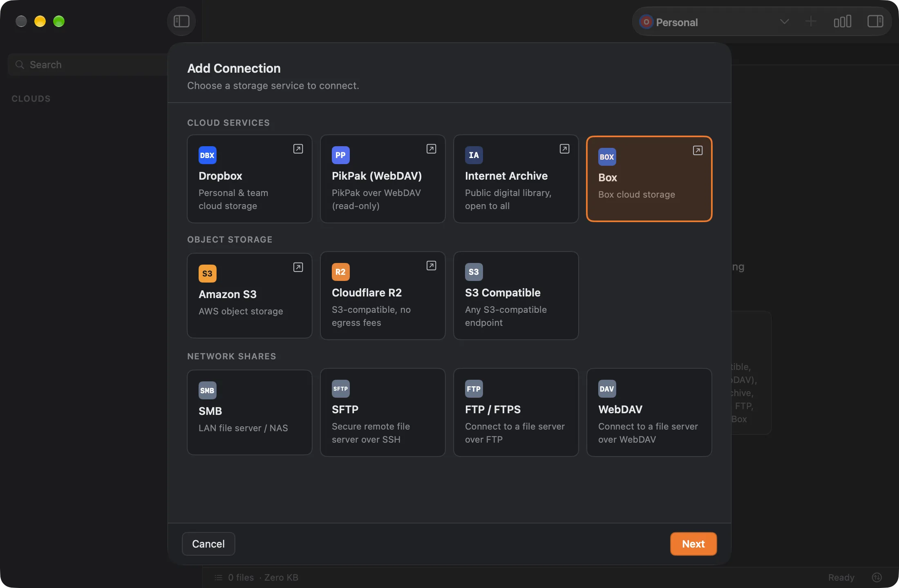
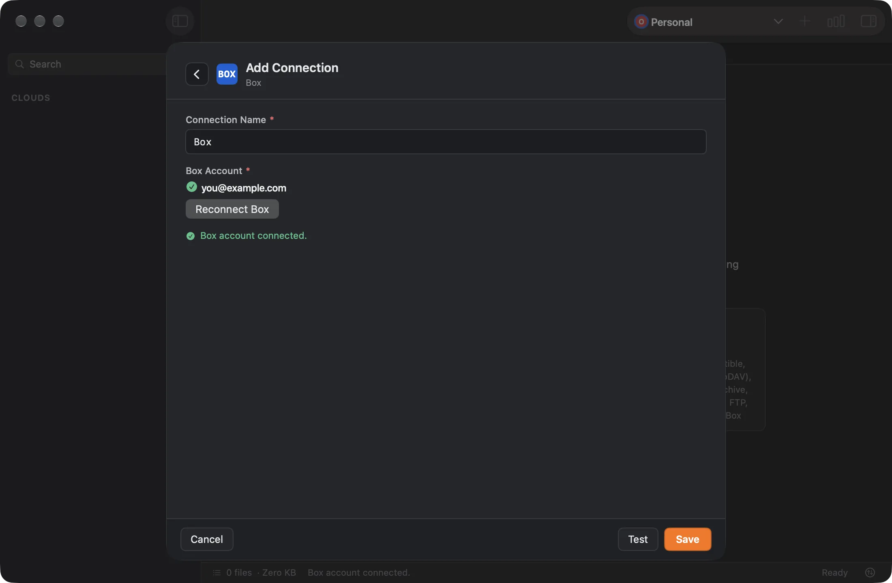
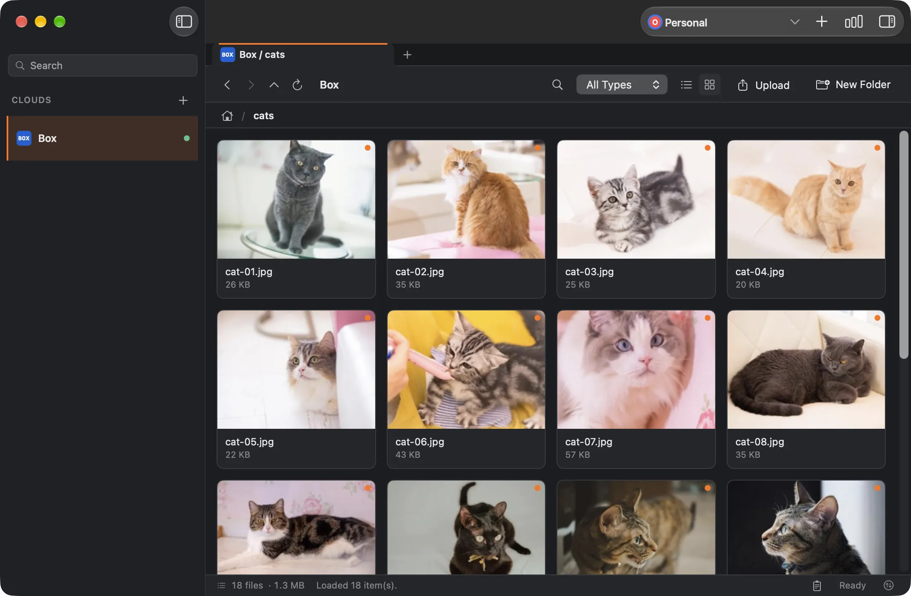

Last updated: November 14, 2026
Obaket is a macOS file manager for cloud storage. After you connect your Box account, you can browse your Box files and folders, preview them with thumbnails, upload and download files, and create, rename, move, copy, and delete items, next to your other cloud storage in one window.



Your files stay between your Mac and Box. Obaket talks to Box directly and has no server of its own. You sign in on Box’s own page in your browser, so Obaket never sees your Box password. Obaket stores only the authorization tokens from Box, in the macOS Keychain on your Mac. See the Privacy Policy for details.
Some companies turn off apps that are not yet approved by the company’s Box administrator. If that applies to your account, signing in or reconnecting will not help until the administrator enables Obaket. Ask your Box administrator to allow Obaket with the Client ID below. The administrator does not need a Box developer account for this.
xfb94dy2nd371cv8sfe177ayunbjojodBox describes these settings in Platform app approval. Menu names in the Admin Console may differ slightly between Box plans.
If your browser asks whether to open Obaket, allow it. If you closed the Box page, clicked Deny, or nothing happens, click Cancel in the Add Connection sheet and start again. Obaket also stops waiting after about five minutes.
If Box sign-in expires or is revoked, Obaket shows “The connection needs to be re-authorized.” Right-click the connection in the sidebar, choose Edit, click Reconnect Box, sign in again, and click Save.
Each Box account has a maximum upload file size that depends on your Box plan. Obaket shows the limit when a file is larger than it allows.
This is different from the file size limit: your Box account has no space left. Free up space in Box, then try the upload again.
Box may block access because of your account’s permissions, a company policy, or a lock on the item. Obaket shows which of these Box reported. Ask the item’s owner or your Box administrator.
Right-click the connection in the sidebar and choose Delete. This removes the stored Box tokens from your Mac. It does not revoke Obaket’s authorization in Box. To revoke it as well, remove Obaket from the authorized apps in your Box account settings.
Email support@jiikko.com, or report a problem on GitHub.
Obaket is an independent app and is not affiliated with, sponsored by, or endorsed by Box, Inc. Box is a trademark of its respective owner.
← Back to Obaket